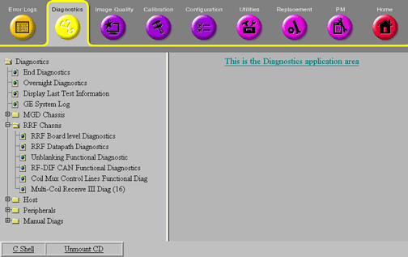

Proprietary to General Electric Company
Direction 5440000, Rev# 5
Signa HDxt Service Methods
Module Version 1.0, Version Date 4/26/07
Proprietary to General Electric Company |
The following diagnostics are available to check the RRF chassis. They can be accessed from the Common Service Browser by clicking the [Diagnostics] tab, selecting RRF Chassis from the column on the left, and then selecting the specific test (see Illustration 1).
Illustration 1: RRF Diagnostics

Further information is also available from the hyper-linked test names on the MR system (see Section 5 of Diagnostic Overview).
Board-level Diagnostics (BLD) should typically be the first tests run when troubleshooting errors that potentially reside in RRF chassis. If BLDs are run and pass, this ensures that communication is at least theoretically possible to all the boards. Most other tests should not be run until BLDs are successfully performed.
These diagnostics allow board-level testing of the following boards:
You can access full details about this test including theory, instructions, and troubleshooting directly from the test's Service Browser interface by clicking hyperlinked text or by clicking the board name in the list above to go directly to the online help.
All these test are pass/fail.
These diagnostics will check the functionality and communication paths of the listed RRF components.
This functional check requires the use of an oscilloscope. It is mainly intended for use during the troubleshooting a problem involving the Unblank signal.
You can access full details about this test including theory, instructions, and troubleshooting directly from the test's Service Browser interface by clicking hyperlinked text or by clicking here to go directly to this diagnostic's the online help.
This test is pass/fail.
These tests, run from the SCP, verify features of the RRF through the CAN-Link. The diagnostics can be run on the RF-DIF for 8-channel systems, or can be run on the Master and Slave boards for 16-channel systems or 32-channel systems.
You can access full details about this test including theory, instructions, and troubleshooting directly from the test's Service Browser interface by clicking hyperlinked text or by clicking Here to go directly to this diagnostic's the online help.
16-channel Switch diagnostics will test the receive section of the system from the input or output of the 16 channel switch, through the entire receive line. A built-in Oscillator (in the 16 channel switch) will inject a signal for all channels. The Signal, Noise and SNR will then be calculated for all channels. The test takes approximately 3 minutes to complete when selecting test all ports, or 30 seconds for any other test. This test should be performed without a coil connected to the LPCA.
You can access full details about this test including theory, instructions, and troubleshooting directly from the test's Service Browser interface by clicking hyperlinked text or by clicking Here to go directly to this diagnostic's the online help.
The purpose of the Sys Cab Loopback Diagnostics is to identify signal problems with the receive chain, which consists of the MUX, UTNS, and Receiver board(s). By running this diagnostic in conjunction with 16-channel switch diagnostic, signal problems can be isolated within or outside of the system cabinet by comparing results between the two diagnostics.
Typically this diagnostic should not be performed as a separate test. Perform the RF Receive Chain FRU Isolation Diagnostic instead.
You can access full details about this test including theory, instructions, and troubleshooting directly from the test's Service Browser interface by clicking hyperlinked text or by clicking Here to go directly to this diagnostic's the online help.
The purpose of UTNS Bypass diagnostic is to identify signal problems with the UTNS board by removing the board form the receive chain and collecting the data. By running this diagnostic in conjunction with the Sys Cab Loopback diagnostic, signal problems can be associated or disassociated with the UTNS board. If there is a failure when running Sys Cab Loopback, and the same failure occurs when running UTNS Bypass Diagnostic, problem will most likely be with UTNS board. This is a sub-test of the RRF Receive Chain Isolation Diagnostic described below.
Typically this diagnostic should not be performed as a separate test. Perform the RF Receive Chain FRU Isolation Diagnostic instead.
You can access full details about this test including theory, instructions, and troubleshooting directly from the test's Service Browser interface by clicking hyperlinked text or by clicking Here to go directly to this diagnostic's the online help.
The purpose of the RF Receive chain Isolation Diagnostic is to isolate signal problems with the analog portion of the receive path that includes the 16 channel switch, receive chain boards (MUX, UTNS, Receiver), Exciter and associated receive chain cabling.
Since this diagnostic is only testing for low signal issues, it is recommend that RRF Board Level Diagnostics (BLD) be run first. Troubleshoot any failures in this section before running this diagnostic. The diagnostic is ideally suited for isolating low signal failures to a FRU inside the RRF Chassis. This diagnostic leads the FE to the failure by analyzing the test results and then prompting the FE to make changes and run new tests based on the previous results. Each step provides instructions to the FE for actions to take next. Carefully read the directions, run the diagnostics, and perform the recommended actions. This diagnostic should lead you to the failing part.
You can access full details about this test including theory, instructions, and troubleshooting directly from the test's Service Browser interface by clicking hyperlinked text or by clicking Here to go directly to this diagnostic's the online help.
This diagnostic tests the fiber optic cables that connect the MGD chassis to the RRF chassis. These cables have fine glass fibers in a soft vinyl jacket. They can be easily damaged if pinched, stepped on, stretched, or bent at a sharp angle.
You can access full details about this test including theory, instructions, and troubleshooting directly from the test's Service Browser interface by clicking hyperlinked text or by clicking Here to go directly to this diagnostic's the online help.
You can access full details about this test including theory, instructions, and troubleshooting directly from the test's Service Browser interface by clicking hyperlinked text or by clicking Here to go directly to this diagnostic's the online help.
The Multicoil receive diagnostics will test all the components in the receive chain from coil connector in the LPCA to the MUX in the RRF chassis. An MCR tool is needed for this diagnostic. The MCR tool must be connected to the A, B, or C port. A built-in Oscillator (in the MCR tool) will inject a signal for all channels. The Signal, Noise, and SNR will then be calculated for all channels.
| NOTE: | MCR tools are specific to your system type. Make sure to use the MCR tool that shipped with your system. |
For detailed information on how to perform the multi-coil receive chain diagnostic, see , , or MCR III Tool.